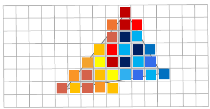

CS 8803 CGA - Point-based Rendering
Rasterization pipeline
Core Concepts: Essence of NeRF and GS
- NeRF is neural radiance representation + differentiable ray tracing
- 3D GS is point-based representation + differentiable rasterization
Rasterization v.s. Ray Tracing
- Rasterization: object point to image plane
- start with a 3D object point
- apply transforms
- determine the 2D image plane point it projects to

- Ray tracing: image plane to object point
- start with a 2D image point
- generate a ray
- determine the visible 3D object point
Rasterization and ray tracing are inverse processes to each other.
Rasterization vs. Ray casting
- What needs to be stored in memory in each case?
- The rasterizer only needs one primitive at a time, plus the entire image and associated depth information for all pixels.
- In this basic form, ray tracing needs the entire scene description in memory at once.
Review of rendering pipeline
Stage I: Vertex Processing
- The vertex processing stage processes vertex data through a vertex shader.
- Each vertex’s properties, like position, color, and texture coordinates, are calculated and transformed to prepare for primitive processing.
- We can program this stage in Vertex Shaders.
Stage II: Primitive Processing
- Once vertices are processed, they are assembled into geometric primitives such as points, lines, or triangles.
- This stage may include tessellation (镶嵌), where primitives are subdivided into finer details, and geometry shading.
- This stage can be programmed using Geometry Shaders.
Stage III: Rasterization
- Rasterization converts primitives into a 2D image or framebuffer.
- It determines the pixels that form the primitives, performing interpolations for pixel positions. This stage sets the scene for fragment processing.
- This stage is not programmable.
Stage IV: Fragment Processing
- Fragments can be thought of as pixels (but they are actually not!), are processed to determine
their final color and properties. - Fragment shaders compute lighting, apply textures, and carry out operations for visual effects.
- We can program this stage in Fragment Shaders.
In the rendering pipeline, fragments and pixels are closely related but distinct concepts. A fragment is an intermediate stage in the pipeline, while a pixel represents the final output on the screen.
-
Fragment
- A fragment is a potential pixel generated during rasterization.
- It contains interpolated attributes from vertices, such as:
- Depth (Z-value)
- Color
- Texture coordinates
- Normals, lighting values, etc.
- Each fragment undergoes per-fragment operations (like shading, depth testing, blending).
- Not all fragments become pixels due to depth testing, alpha testing, and other rejection criteria.
-
Pixel
- A pixel is the final colored output on the screen.
- It contains final colors only.
- After fragment processing, only one final color value per pixel is stored in the frame buffer.
- Operations affecting pixels:
- Blending (combining multiple fragments)
- Post-processing effects (antialiasing, tone mapping)
- If two fragments map to the same pixel, only the one closest to the camera (passing depth test) is displayed.
Stage V: Pixel Processing
- The pixel processing stage involves operations like blending and testing pixels for depth and stencil (模板) comparison.
- The final pixel colors are output to the screen, resulting in the rendered image.
- This stage is not fully programmable (mainly hardware control).
Points and surfels
Points as Rendering Primitives
- We want to use point clouds instead of triangle meshes and textures as a rendering primitive
- Points are considered as a collection of nonuniform samplers of a surface in 3D space
- We want to carry surface information such as colors, normal, and textures on each point
- The original idea has been proposed by Levoy and Whitted in 1985 (The Use of Points as a Display Primitive Marc Levoy and Turner WhittedTechnical Report 85-022, UNC Chapel Hill, January, 1985.)
Why Points?
Representation Simplicity
- Performance of 3D hardware has exploded
- Projected triangles are very small, causing higher setup overhead
- Generating triangle meshes is time-consuming and difficult
- Seeking a simpler, more efficient rendering primitive than triangles
Model Acquisition
- 3D scanning of physical objects is ubiquitous
- Modern 3D scanning and LiDAR devices produce huge point clouds
- Direct rendering of acquired point clouds becomes possible with the improvement of GPU power
- Efficient rendering of synthetic models and animated scenes
Model Editing
- Processing and editing of point-sampled geometry become necessary after obtaining these geometries from real-world scanning
- Graphics community needs a point-based content creation pipeline
Points as primitives - Summary
- Point clouds instead of triangle meshes
- No explicit connectivity or texture maps
- Each point carries 3D geometry and surface reflectance properties
- We need a large number of points to render realistic appearance
Recap: Render a Single Particle in Fragment Shader
1 | |
Recap: Render Multiple Particles in Fragment Shader
1 | |
Surface Element (Surfel)
- A surfel is defined as a point in space carrying a list of attributes (position:x, color:c)
- A surfel encapsulates the properties of a small patch of a surface
- Extended attributes include normal, radius, and other shading properties such as transparency
Using Surfels to Represent a Surface
- Each surfel represents as a small patch of the surface
- A certain surface area is associated with each surfel
- Its normal vector represents the normal direction of the surface on the local patch
- How to represent the surface between the points? Surfels need to interpolate the surface between the points
Surfel Interpolation
- Each surfel carries a kernel function spreading its contribution over neighboring points
- The splat function defines the shape and intensity of this spread, often using a Gaussian kernel (where Gaussian Splatting comes from) or an elliptical kernel to simulate natural energy distribution
- The value of a new point on the surface is interpolated using the kernel function of each neighboring surfel (think of weighted average, here we do normalization so that )
Point-based rendering pipeline
Shading
For each surfel, we shade its color using conventional shading models (e.g., phong shading) and then store its color on the surfel.
Warping (变形)
Warping in the point-based rendering pipeline refers to the transformation of surface colors from object space to image space using a reconstruction technique. It ensures that colors from surfels (surface elements) are accurately transferred to the final pixel representation in screen space.
Rendering Surfels on Screen
- Considers surfels as discrete samples of a texture function on a surface in 3D object space. We can imagine a set of points (with colors, normals, etc.) scattered nonuniformly over an object. Conceptually, these surfels approximate some continuous function (like a texture or color distribution) on the 3D surface.
- When we render an image, we have a uniform grid of pixels in 2D screen space. Each pixel is effectively a sample of the projected surface function. So there’s a change in coordinate system: from 3D object space to 2D screen space. A Gaussian kernel (splat function) is used to recover a continuous signal such that we can sample it in 2D screen space.
- The rendering process can be thought of as a resampling process to reconstruct the signal in screen space.
- To figure out each pixel’s color (or any other attribute), we need to “look up” how that pixel relates back to the surfels in object space. Resampling is the process of:
- Reconstructing the continuous function from the nonuniform surfel samples (often via a smoothing kernel, e.g. a Gaussian “splat”)
- Evaluating that reconstructed function at the uniform pixel grid in screen space.
PS: whenever see “resampling,” think:
“I have some discrete data in one domain. I want to produce discrete data in another domain. So I reconstruct (smooth/interpolate) and then sample again in the new domain.”
Point-based Shading and Warping Algorithm
- Stage I: go over all surfels (Happens in the vertex shader)
1 | |
- Stage II: go over all pixels (Happens in the fragment shader)
1 | |
Visibility
Visibility test
The visibility test ensures that only visible surface elements (surfels) contribute to the final pixel color.
- The z-threshold accumulate splats is a depth threshold that determines whether multiple splats should be accumulated or discarded.
- If the depth difference between the incoming splat and the current depth buffer value is within the threshold, the splat is accumulated (blended with the existing color and weight at that pixel).
- If the splat is too far from the existing depth value, it is discarded to avoid artifacts from occluded (被遮挡的) surfaces.
See the psudocode of depth test.
1 | |
Alpha blending
- Additive Blending (Left)
- Computes pixel color as a weighted average of all surfel contributions.
- Absorption Blending (Right)
- Models light absorption through a volume, similar to NeRF (Neural Radiance Fields).
Filtering
Filtering in the point-based rendering pipeline is applied after surfels are warped to screen space to smooth accumulated colors before final sampling. This step ensures high-quality reconstruction by avoiding holes, reducing aliasing and preserving details. After the surfels are warped to screen, we will perform a low-pass filter onto the accumulated colors and sample on the output grid.
In the figure above,
- Warping (Step 2): Surfels are projected from source space to destination space (screen space).
- Filtering (Step 3): A low-pass filter is applied to the warped surfel contributions, typically using:
- Reconstruction kernels to smooth scattered surfel data.
- Convolution-based filtering to aggregate values before sampling.
- Sampling (Step 4): The final colors are resampled onto the pixel grid for output.
PS: the meaning of “splat” in the context of Gaussian Splatting
As a verb, it refers to the process of projecting and blending a Gaussian-shaped surfel (a small surface element) onto the image plane. As a noun, it refers to the projected contribution of a 3D Gaussian (or surfel) onto the 2D image plane during rendering.
- 3D Gaussians Representation
- Each surfel (point in 3D space) is represented as an anisotropic (direction-dependent) or isotropic (uniform) Gaussian blob.
- These Gaussians have a position, scale, orientation, color, and opacity.
- Splatting Process (Projection & Blending)
- Each Gaussian is projected onto the 2D screen.
- Instead of a single pixel, it contributes to multiple pixels based on its Gaussian distribution.
- This creates a smooth and continuous blending effect.